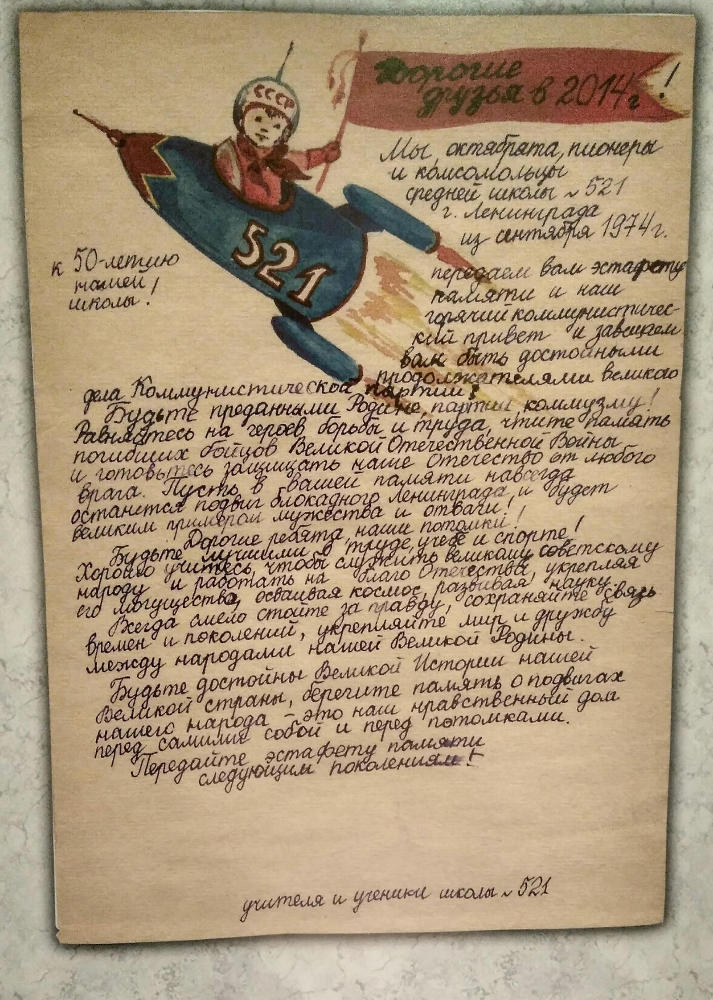
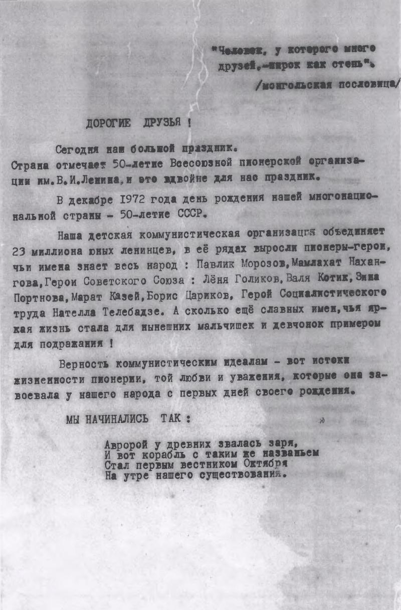
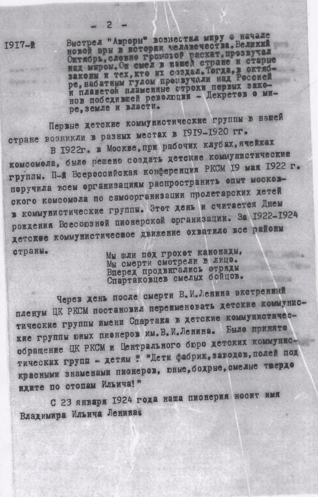
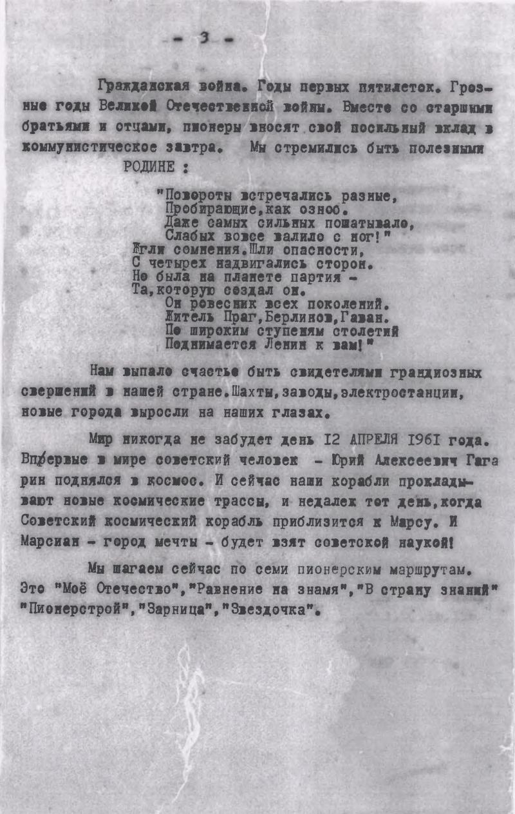
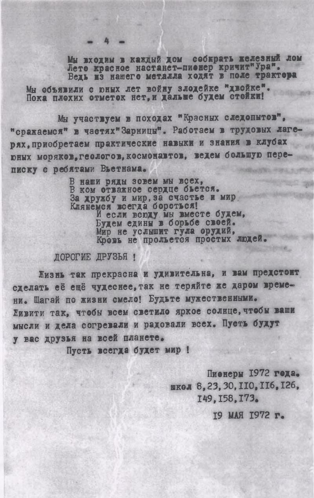
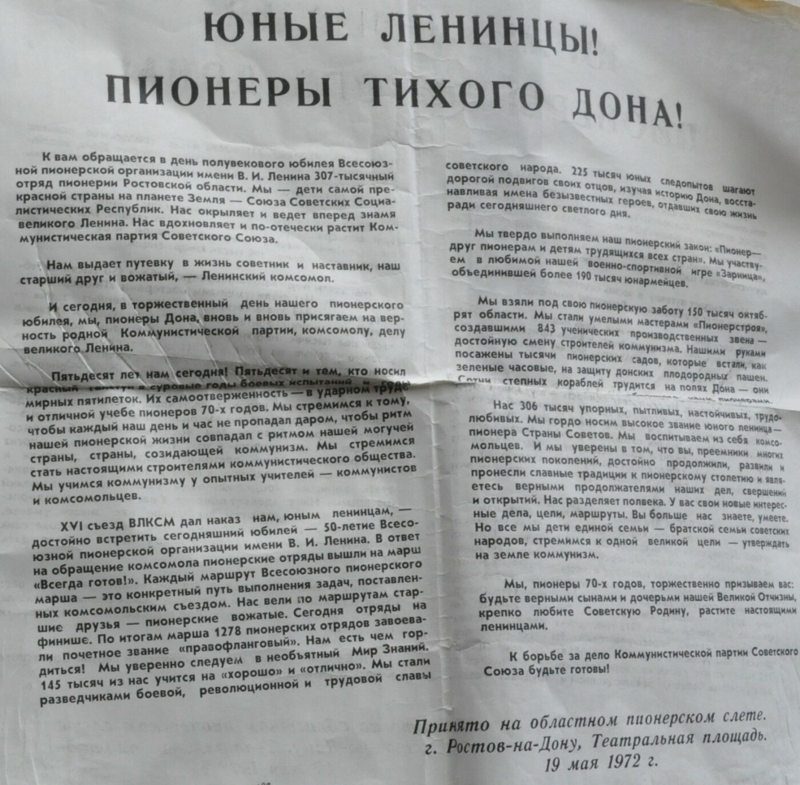
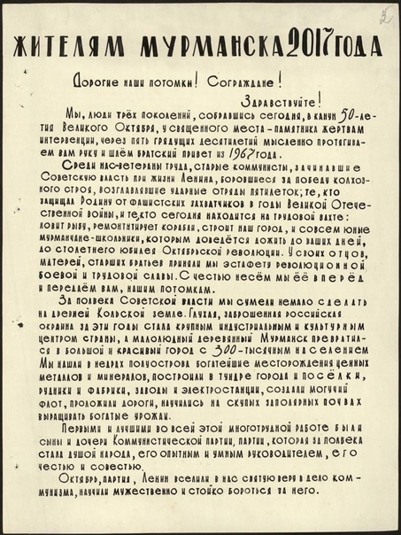
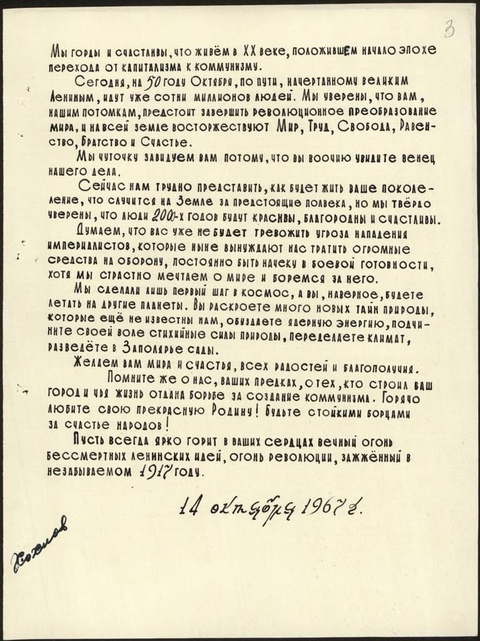

<!DOCTYPE html>
<html>
<head>
    
    <meta http-equiv="content-type" content="text/html; charset=UTF-8" />
    
        <script>
            L_NO_TOUCH = false;
            L_DISABLE_3D = false;
        </script>
    
    <style>html, body {width: 100%;height: 100%;margin: 0;padding: 0;}</style>
    <style>#map {position:absolute;top:0;bottom:0;right:0;left:0;}</style>
    <script src="https://cdn.jsdelivr.net/npm/leaflet@1.9.3/dist/leaflet.js"></script>
    <script src="https://code.jquery.com/jquery-3.7.1.min.js"></script>
    <script src="https://cdn.jsdelivr.net/npm/bootstrap@5.2.2/dist/js/bootstrap.bundle.min.js"></script>
    <script src="https://cdnjs.cloudflare.com/ajax/libs/Leaflet.awesome-markers/2.0.2/leaflet.awesome-markers.js"></script>
    <link rel="stylesheet" href="https://cdn.jsdelivr.net/npm/leaflet@1.9.3/dist/leaflet.css"/>
    <link rel="stylesheet" href="https://cdn.jsdelivr.net/npm/bootstrap@5.2.2/dist/css/bootstrap.min.css"/>
    <link rel="stylesheet" href="https://netdna.bootstrapcdn.com/bootstrap/3.0.0/css/bootstrap-glyphicons.css"/>
    <link rel="stylesheet" href="https://cdn.jsdelivr.net/npm/@fortawesome/fontawesome-free@6.2.0/css/all.min.css"/>
    <link rel="stylesheet" href="https://cdnjs.cloudflare.com/ajax/libs/Leaflet.awesome-markers/2.0.2/leaflet.awesome-markers.css"/>
    <link rel="stylesheet" href="https://cdn.jsdelivr.net/gh/python-visualization/folium/folium/templates/leaflet.awesome.rotate.min.css"/>
    
            <meta name="viewport" content="width=device-width,
                initial-scale=1.0, maximum-scale=1.0, user-scalable=no" />
            <style>
                #map_e7bb6531503c7f8868b3f34010c9f4a8 {
                    position: relative;
                    width: 100.0%;
                    height: 100.0%;
                    left: 0.0%;
                    top: 0.0%;
                }
                .leaflet-container { font-size: 1rem; }
            </style>
        
</head>
<body>
    
    
            <div class="folium-map" id="map_e7bb6531503c7f8868b3f34010c9f4a8" ></div>
        
</body>
<script>
    
    
            var map_e7bb6531503c7f8868b3f34010c9f4a8 = L.map(
                "map_e7bb6531503c7f8868b3f34010c9f4a8",
                {
                    center: [60.0, 90.0],
                    crs: L.CRS.EPSG3857,
                    zoom: 3,
                    zoomControl: true,
                    preferCanvas: false,
                }
            );

            

        
    
            var tile_layer_65edce65eb431fcdb1f3c2a19ce677c7 = L.tileLayer(
                "https://{s}.basemaps.cartocdn.com/light_all/{z}/{x}/{y}{r}.png",
                {"attribution": "Map data \u00a9 OpenStreetMap contributors", "detectRetina": false, "maxNativeZoom": 20, "maxZoom": 20, "minZoom": 0, "noWrap": false, "opacity": 1, "subdomains": "abcd", "tms": false}
            );
        
    
            tile_layer_65edce65eb431fcdb1f3c2a19ce677c7.addTo(map_e7bb6531503c7f8868b3f34010c9f4a8);
        
    
            var circle_marker_24059a2110f31ca154809e02fa5d39cb = L.circleMarker(
                [59.938732, 30.316229],
                {"bubblingMouseEvents": true, "color": "red", "dashArray": null, "dashOffset": null, "fill": true, "fillColor": "yellow", "fillOpacity": 0.6, "fillRule": "evenodd", "lineCap": "round", "lineJoin": "round", "opacity": 1.0, "radius": 10, "stroke": true, "weight": 8}
            ).addTo(map_e7bb6531503c7f8868b3f34010c9f4a8);
        
    
        var popup_a9f59c8849c702679906fa564a455edd = L.popup({"maxWidth": 600});

        
            
                var html_ccc9cd1ba8bedf76811a309b811a8011 = $(`<div id="html_ccc9cd1ba8bedf76811a309b811a8011" style="width: 100.0%; height: 100.0%;">                 <h4><b>Botschaft aus der Zeitkapsel / Послание из капсулы времени.<br> Sankt Petersburg</b></h4>                 <b>Titel:</b> Письмо из капсулы времени школы № 512 г. Санкт-Петербурга / Brief aus der Zeitkapsel der Schule Nr. 512 der Stadt St. Petersburg<br>                 <b>Zeitkapsel eingelegt am:</b> 1974-09-01<br>                 <b>Zeitkapsel geöffnet am:</b> 2017-05-15<br>                 <b>Aufbewahrende Institution:</b> Музей Константина Эдуардовича Циолковского государственного бюджетного общеобразовательного учреждения средней общеобразовательной школы №521 / Museum von Konstantin Eduardowitsch Ziolkowski der staatlichen haushaltsmäßigen allgemeinbildenden Einrichtung der mittleren allgemeinbildenden Schule №521<br><br>                 <h5><b>Physische Beschreibung</b></h5>                 <b>Form:</b> Brief-Botschaft<br>                 <b>Umfang:</b> 1 Blatt<br>                 <b>Maße:</b> Nicht verfügbar<br>                 <b>Material:</b> Papier, Tinte, Farben<br>                 <b>Anmerkungen:</b> handgeschrieben<br><br>                 <h5><b>Dateien</b></h5><b>Bilder:</b><br><div style='display: flex; flex-wrap: wrap; gap: 10px;'><a href='Digitalisate/HS_74_SPB.jpg' target='_blank' title='Datei anzeigen' style='display: inline-block;'></a></div><br><b>Transkriptionen:</b><br><a href='Transkribierte Texte/SPB_MANUELL.txt' target='_blank' title='Datei anzeigen'>SPB_MANUELL.txt</a><br><b>Übersetzungen:</b><br><a href='Übersetzung/SPB_ÜBERSETZT.txt' target='_blank' title='Datei anzeigen'>SPB_ÜBERSETZT.txt</a><br><b>Metadaten:</b><br><a href='Metadaten/74_HS_SPB.xml' target='_blank' title='Metadaten anzeigen'>74_HS_SPB.xml</a><br><br></div>`)[0];
                popup_a9f59c8849c702679906fa564a455edd.setContent(html_ccc9cd1ba8bedf76811a309b811a8011);
            
        

        circle_marker_24059a2110f31ca154809e02fa5d39cb.bindPopup(popup_a9f59c8849c702679906fa564a455edd)
        ;

        
    
    
            circle_marker_24059a2110f31ca154809e02fa5d39cb.bindTooltip(
                `<div>
                     <span style='font-size: 16px; color: black;'>Klicken für mehr Info</span>
                 </div>`,
                {"sticky": true}
            );
        
    
            var circle_marker_6029db3401632db709a0e98d3b826fc6 = L.circleMarker(
                [55.0288307, 82.9226887],
                {"bubblingMouseEvents": true, "color": "red", "dashArray": null, "dashOffset": null, "fill": true, "fillColor": "yellow", "fillOpacity": 0.6, "fillRule": "evenodd", "lineCap": "round", "lineJoin": "round", "opacity": 1.0, "radius": 10, "stroke": true, "weight": 8}
            ).addTo(map_e7bb6531503c7f8868b3f34010c9f4a8);
        
    
        var popup_2ac84a268b9cf43840f533a3c84071d3 = L.popup({"maxWidth": 600});

        
            
                var html_ed6807e26289e653d52f6cc0507f9c8a = $(`<div id="html_ed6807e26289e653d52f6cc0507f9c8a" style="width: 100.0%; height: 100.0%;">                 <h4><b>Botschaft aus der Zeitkapsel / Послание из капсулы времени.<br> Nowosibirsk</b></h4>                 <b>Titel:</b> Письмо-послание от пионеров школ №№ 8, 23, 30, 110, 116, 126, 149, 158, 173 г. Новосибирска будущему поколению / Brief-Botschaft von den Pionieren der Schulen №№ 8, 23, 30, 110, 116, 126, 149, 158, 173 der Stadt Nowosibirsk an die nachkommende Generation<br>                 <b>Zeitkapsel eingelegt am:</b> 1972-05-19<br>                 <b>Zeitkapsel geöffnet am:</b> 2022-05-19<br>                 <b>Aufbewahrende Institution:</b> Муниципальное автономное учрежджение культуры города Новосибирска «Музей Новосибирска» / Städtische autonome Kulturinstitution der Stadt Nowosibirsk «Museum von Nowosibirsk»<br><br>                 <h5><b>Physische Beschreibung</b></h5>                 <b>Form:</b> Brief-Botschaft<br>                 <b>Umfang:</b> 4 Blätter<br>                 <b>Maße:</b> je ca. 25.7 x 16 cm<br>                 <b>Material:</b> Papier, Paraffin, Druckerschwärze<br>                 <b>Anmerkungen:</b> maschinengeschrieben; Einzelne Seiten gekennzeichnet als: МН-НВФ-13845/1, МН-НВФ-13845/2, МН-НВФ-13845/3, МН-НВФ-13845/4<br><br>                 <h5><b>Dateien</b></h5><b>Bilder:</b><br><div style='display: flex; flex-wrap: wrap; gap: 10px;'><a href='Digitalisate/72_DS_NOWOSIBIRSK_МН-НВФ-13845-1.jpg' target='_blank' title='Datei anzeigen' style='display: inline-block;'></a><a href='Digitalisate/72_DS_NOWOSIBIRSK_МН-НВФ-13845-2.jpg' target='_blank' title='Datei anzeigen' style='display: inline-block;'></a><a href='Digitalisate/72_DS_NOWOSIBIRSK_МН-НВФ-13845-3.jpg' target='_blank' title='Datei anzeigen' style='display: inline-block;'></a><a href='Digitalisate/72_DS_NOWOSIBIRSK_МН-НВФ-13845-4.jpg' target='_blank' title='Datei anzeigen' style='display: inline-block;'></a></div><br><b>Transkriptionen:</b><br><a href='Transkribierte Texte/NOWOSIBIRSK_MANUELL.txt' target='_blank' title='Datei anzeigen'>NOWOSIBIRSK_MANUELL.txt</a><br><b>Übersetzungen:</b><br><a href='Übersetzung/NOWOSIBIRSK_ÜBERSETZT.txt' target='_blank' title='Datei anzeigen'>NOWOSIBIRSK_ÜBERSETZT.txt</a><br><b>Metadaten:</b><br><a href='Metadaten/72_DS_NOWOSIBIRSK_МН-НВФ-13845.xml' target='_blank' title='Metadaten anzeigen'>72_DS_NOWOSIBIRSK_МН-НВФ-13845.xml</a><br><br></div>`)[0];
                popup_2ac84a268b9cf43840f533a3c84071d3.setContent(html_ed6807e26289e653d52f6cc0507f9c8a);
            
        

        circle_marker_6029db3401632db709a0e98d3b826fc6.bindPopup(popup_2ac84a268b9cf43840f533a3c84071d3)
        ;

        
    
    
            circle_marker_6029db3401632db709a0e98d3b826fc6.bindTooltip(
                `<div>
                     <span style='font-size: 16px; color: black;'>Klicken für mehr Info</span>
                 </div>`,
                {"sticky": true}
            );
        
    
            var circle_marker_ac158ff1c45d719b2bbde07b63587f91 = L.circleMarker(
                [47.2216548, 39.7096061],
                {"bubblingMouseEvents": true, "color": "red", "dashArray": null, "dashOffset": null, "fill": true, "fillColor": "yellow", "fillOpacity": 0.6, "fillRule": "evenodd", "lineCap": "round", "lineJoin": "round", "opacity": 1.0, "radius": 10, "stroke": true, "weight": 8}
            ).addTo(map_e7bb6531503c7f8868b3f34010c9f4a8);
        
    
        var popup_eae7aa1f0d9aecfd729703fc8271a38d = L.popup({"maxWidth": 600});

        
            
                var html_8c468a3c6fb382c79231b09710e3786e = $(`<div id="html_8c468a3c6fb382c79231b09710e3786e" style="width: 100.0%; height: 100.0%;">                 <h4><b>Botschaft aus der Zeitkapsel / Послание из капсулы времени.<br> Rostow am Don</b></h4>                 <b>Titel:</b> Послание пионерам 2022 года от пионеров 1972 года / Botschaft an die Pioniere des Jahres 2022 von den Pionieren des Jahres 1972<br>                 <b>Zeitkapsel eingelegt am:</b> 1972-05-19<br>                 <b>Zeitkapsel geöffnet am:</b> 2022-05-19<br>                 <b>Aufbewahrende Institution:</b> Государственное бюджетное учреждение культуры Ростовской области «Ростовский областной музей краеведения» / Staatliche haushaltsmäßige Kultureinrichtung der Rostow Oblast «Rostower Regionalmuseum für Heimatkunde»<br><br>                 <h5><b>Physische Beschreibung</b></h5>                 <b>Form:</b> Brief-Botschaft<br>                 <b>Umfang:</b> 1 Blatt<br>                 <b>Maße:</b> ca. 41.5 х 29.5 cm<br>                 <b>Material:</b> typografischer Druck, Tinte<br>                 <b>Anmerkungen:</b> gedruckt<br><br>                 <h5><b>Dateien</b></h5><b>Bilder:</b><br><div style='display: flex; flex-wrap: wrap; gap: 10px;'><a href='Digitalisate/72_DS_ROSTOW_РОМК-КП-27720.jpg' target='_blank' title='Datei anzeigen' style='display: inline-block;'></a></div><br><b>Transkriptionen:</b><br><a href='Transkribierte Texte/ROSTOW_MANUELL.txt' target='_blank' title='Datei anzeigen'>ROSTOW_MANUELL.txt</a><br><b>Übersetzungen:</b><br><a href='Übersetzung/ROSTOW_ÜBERSETZT.txt' target='_blank' title='Datei anzeigen'>ROSTOW_ÜBERSETZT.txt</a><br><b>Metadaten:</b><br><a href='Metadaten/72_DS_ROSTOW_РОМК-КП-27720.xml' target='_blank' title='Metadaten anzeigen'>72_DS_ROSTOW_РОМК-КП-27720.xml</a><br><br></div>`)[0];
                popup_eae7aa1f0d9aecfd729703fc8271a38d.setContent(html_8c468a3c6fb382c79231b09710e3786e);
            
        

        circle_marker_ac158ff1c45d719b2bbde07b63587f91.bindPopup(popup_eae7aa1f0d9aecfd729703fc8271a38d)
        ;

        
    
    
            circle_marker_ac158ff1c45d719b2bbde07b63587f91.bindTooltip(
                `<div>
                     <span style='font-size: 16px; color: black;'>Klicken für mehr Info</span>
                 </div>`,
                {"sticky": true}
            );
        
    
            var circle_marker_342e9afea9edbe549540afc762bcb015 = L.circleMarker(
                [68.970665, 33.07497],
                {"bubblingMouseEvents": true, "color": "red", "dashArray": null, "dashOffset": null, "fill": true, "fillColor": "yellow", "fillOpacity": 0.6, "fillRule": "evenodd", "lineCap": "round", "lineJoin": "round", "opacity": 1.0, "radius": 10, "stroke": true, "weight": 8}
            ).addTo(map_e7bb6531503c7f8868b3f34010c9f4a8);
        
    
        var popup_99234abd57a5a656e0a25b5d6404f671 = L.popup({"maxWidth": 600});

        
            
                var html_016706971a3a6158e2e0211ab3d063f4 = $(`<div id="html_016706971a3a6158e2e0211ab3d063f4" style="width: 100.0%; height: 100.0%;">                 <h4><b>Botschaft aus der Zeitkapsel / Послание из капсулы времени.<br> Murmansk</b></h4>                 <b>Titel:</b> Послание жителям Мурманска 2017 года / Botschaft an die Einwohner von Murmansk des Jahres 2017<br>                 <b>Zeitkapsel eingelegt am:</b> 1967-10-14<br>                 <b>Zeitkapsel geöffnet am:</b> 2017-10-04<br>                 <b>Aufbewahrende Institution:</b> Государственное областное автономное учреждение культуры «Мурманский областной краеведческий музей» / Staatliche regionale autonome Kultureinrichtung «Murmansker Regionalmuseum für Heimatkunde»<br><br>                 <h5><b>Physische Beschreibung</b></h5>                 <b>Form:</b> Brief-Botschaft<br>                 <b>Umfang:</b> 2 Blätter<br>                 <b>Maße:</b> je ca. 30.5 х 22.5 cm<br>                 <b>Material:</b> Papier, Tinte<br>                 <b>Anmerkungen:</b> handgeschrieben; Einzelne Seiten gekennzeichnet als: МОМ-ОФ-24525/1, МОМ-ОФ-24525/2<br><br>                 <h5><b>Dateien</b></h5><b>Bilder:</b><br><div style='display: flex; flex-wrap: wrap; gap: 10px;'><a href='Digitalisate/67_MURMANSK_HDS_МОМ-ОФ-24525-1.JPG' target='_blank' title='Datei anzeigen' style='display: inline-block;'></a><a href='Digitalisate/67_MURMANSK_HDS_МОМ-ОФ-24525-2.JPG' target='_blank' title='Datei anzeigen' style='display: inline-block;'></a></div><br><b>Transkriptionen:</b><br><a href='Transkribierte Texte/MURMANSK_MANUELL.txt' target='_blank' title='Datei anzeigen'>MURMANSK_MANUELL.txt</a><br><b>Übersetzungen:</b><br><a href='Übersetzung/MURMANSK_ÜBERSETZT.txt' target='_blank' title='Datei anzeigen'>MURMANSK_ÜBERSETZT.txt</a><br><b>Metadaten:</b><br><a href='Metadaten/67_HDS_MURMANSK_МОМ-ОФ-24525.xml' target='_blank' title='Metadaten anzeigen'>67_HDS_MURMANSK_МОМ-ОФ-24525.xml</a><br><br></div>`)[0];
                popup_99234abd57a5a656e0a25b5d6404f671.setContent(html_016706971a3a6158e2e0211ab3d063f4);
            
        

        circle_marker_342e9afea9edbe549540afc762bcb015.bindPopup(popup_99234abd57a5a656e0a25b5d6404f671)
        ;

        
    
    
            circle_marker_342e9afea9edbe549540afc762bcb015.bindTooltip(
                `<div>
                     <span style='font-size: 16px; color: black;'>Klicken für mehr Info</span>
                 </div>`,
                {"sticky": true}
            );
        
    
            var circle_marker_c10860642090257f7c352869c1d11378 = L.circleMarker(
                [58.014965, 56.246723],
                {"bubblingMouseEvents": true, "color": "red", "dashArray": null, "dashOffset": null, "fill": true, "fillColor": "yellow", "fillOpacity": 0.6, "fillRule": "evenodd", "lineCap": "round", "lineJoin": "round", "opacity": 1.0, "radius": 10, "stroke": true, "weight": 8}
            ).addTo(map_e7bb6531503c7f8868b3f34010c9f4a8);
        
    
        var popup_f933fe558052126f7628ab6813379a58 = L.popup({"maxWidth": 600});

        
            
                var html_3820f02a696182400eb9cf488641c989 = $(`<div id="html_3820f02a696182400eb9cf488641c989" style="width: 100.0%; height: 100.0%;">                 <h4><b>Botschaft aus der Zeitkapsel / Послание из капсулы времени.<br> Perm</b></h4>                 <b>Titel:</b> Городской совет пионерской организации, Городской пионерский штаб «Искатель». Письмо открытое, пионерам 2022 года из «капсулы времени» / Stadtrat der Pionierorganisation, Stadtpionierstab «Sucher». Offener Brief an die Pioniere des Jahres 2022 aus der «Zeitkapsel»<br>                 <b>Zeitkapsel eingelegt am:</b> 1972-05-19<br>                 <b>Zeitkapsel geöffnet am:</b> 2022-05-18<br>                 <b>Aufbewahrende Institution:</b> Государственное краевое бюджетное учреждение культуры «Пермский краеведческий музей» / Staatliche regionale haushaltsmäßige Kultureinrichtung «Regionalgeschichtliches Museum Perm»<br><br>                 <h5><b>Physische Beschreibung</b></h5>                 <b>Form:</b> Brief-Botschaft<br>                 <b>Umfang:</b> 2 Blätter<br>                 <b>Maße:</b> je ca. 29.7 х 20.9 cm<br>                 <b>Material:</b> Papier, Paste (blau)<br>                 <b>Anmerkungen:</b> maschinengeschrieben, handgeschrieben; Einzelne Seiten gekennzeichnet als: ПКМ-21683/1, ПКМ-21683/2<br><br>                 <h5><b>Dateien</b></h5><b>Bilder:</b><br><div style='display: flex; flex-wrap: wrap; gap: 10px;'><a href='Digitalisate/72_DS_PERM_21683-1.jpg' target='_blank' title='Datei anzeigen' style='display: inline-block;'></a><a href='Digitalisate/72_DS_PERM_21683-2.jpg' target='_blank' title='Datei anzeigen' style='display: inline-block;'></a></div><br><b>Transkriptionen:</b><br><a href='Transkribierte Texte/PERM_MANUELL.txt' target='_blank' title='Datei anzeigen'>PERM_MANUELL.txt</a><br><b>Übersetzungen:</b><br><a href='Übersetzung/PERM_ÜBERSETZT.txt' target='_blank' title='Datei anzeigen'>PERM_ÜBERSETZT.txt</a><br><b>Metadaten:</b><br><a href='Metadaten/72_DS_PERM_21683.xml' target='_blank' title='Metadaten anzeigen'>72_DS_PERM_21683.xml</a><br><br></div>`)[0];
                popup_f933fe558052126f7628ab6813379a58.setContent(html_3820f02a696182400eb9cf488641c989);
            
        

        circle_marker_c10860642090257f7c352869c1d11378.bindPopup(popup_f933fe558052126f7628ab6813379a58)
        ;

        
    
    
            circle_marker_c10860642090257f7c352869c1d11378.bindTooltip(
                `<div>
                     <span style='font-size: 16px; color: black;'>Klicken für mehr Info</span>
                 </div>`,
                {"sticky": true}
            );
        
</script>
</html>